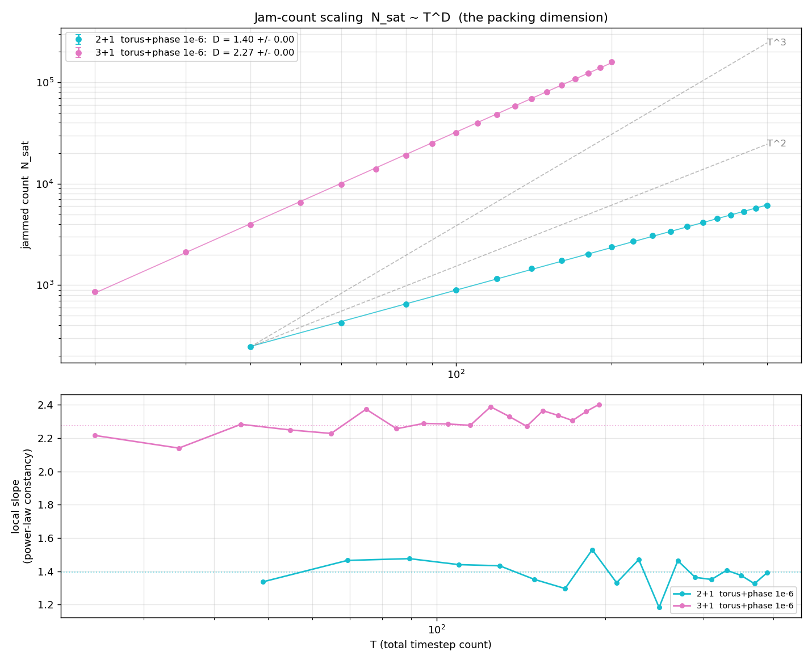
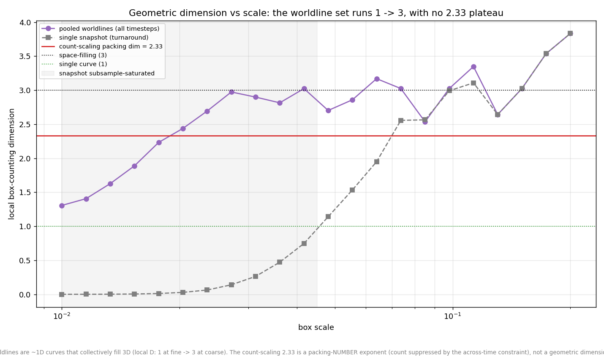
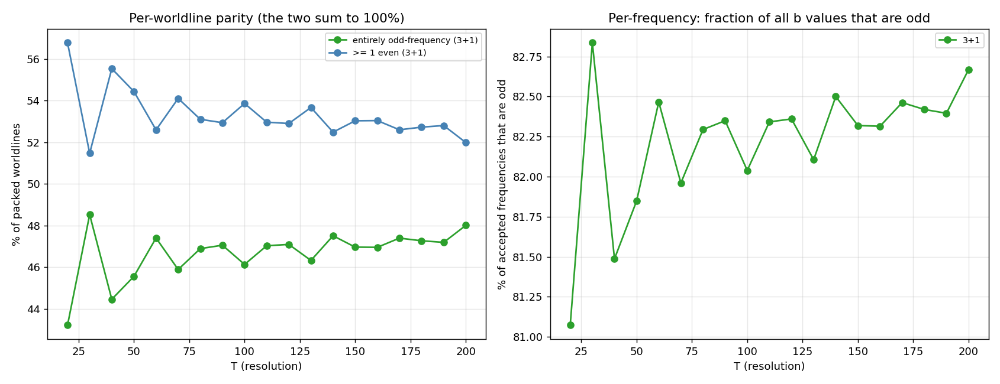
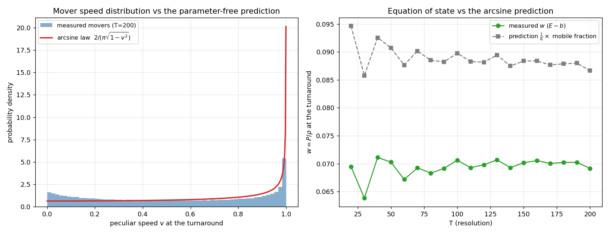

The Braided Universe
A packing model of the cosmos: unit-rapidity sinusoidal worldlines on a comoving torus, threaded into a closed conformal-time loop, jammed to saturation by random sequential adsorption, and studied for the scaling laws and emergent physics that fall out of the geometry.
The jam count grows as a clean power law N ∼ T2.33 in 3+1 and T1.38 in 2+1 — a packing-number exponent carried by no static set: matter slices are exactly uniform (wrapped D2 = 3.01 / 2.03). Mover speeds follow a phase-selected arcsine law, and the turnaround equation of state is matter-like, w = 0.070.
Interactive viewer
The viewer packs a universe live in your browser and renders every worldline across all of conformal time. WebGL required.
Example datasets
Real GPU-packed runs exported by the engines' --dump-params
flag — one CSV row per accepted worldline (positions are analytic, so
the parameters are the whole dataset). Download one and load it with the
Import CSV button in the
wrapped 2+1 viewer:
these runs sit far nearer to jamming than the in-page generator reaches.
2+1 hard-wall, T=200 ↓
4390 worldlines · 283 KB — the corrdim2d dimension-study family.
2+1 hard-wall, T=100 ↓
1480 worldlines · 92 KB — smaller, quick-loading variant.
2+1 torus, T=200 ↓
2735 worldlines · 175 KB — toroidal collisions, matching the wrapped viewer.
Phase-column demo, T=100 ↓
50 worldlines · 4 KB — tiny synthetic 8-column file (fx,fy present).
Key results






Publications
The paper (PDF) →
A packing model of a closed universe: random sequential adsorption of
unit-rapidity worldlines on a comoving torus. Bentley & Bentley,
draft of July 6, 2026 (source in paper/).
External review (PDF) →
Comprehensive review and phenomenological analysis: random sequential adsorption of worldlines in toroidal cosmology. A reviewer's analysis of the manuscript.
Read more
- Lab notes — the dated log of campaigns and the plots they produced, each tied to the commit that generated it.
- PHYSICS_FINDINGS.md — the full findings log.
- Source & engines — the
braidlaborchestration suite and CUDA packing engines.